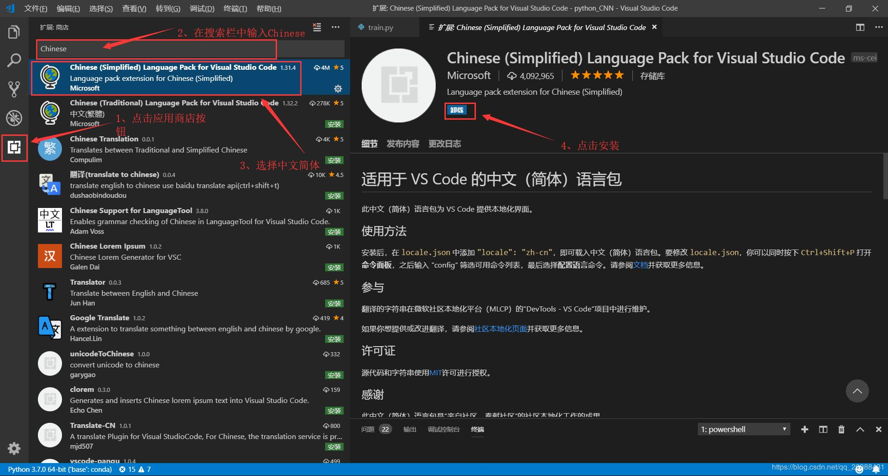

# VScode 代码保存自动格式化
一、实现 vs code 中代码格式化快捷键：【Shift】+【Alt】+F
二、实现保存时自动代码格式化：
1）文件 ------.>【首选项】---------->【设置】；
2）搜索 emmet.include;
3）在 settings.json 下的【工作区设置】中添加以下语句：
"editor.formatOnType": true,
"editor.formatOnSave": true
4）随便写代码进行测试即可。
# python 代码保存自动格式化
VScode 创建 python 文件会自动提示安装 autopep8, 或者通过以下命令进行安装
$ pip install -U autopep8 |
# VScode 配置中文
